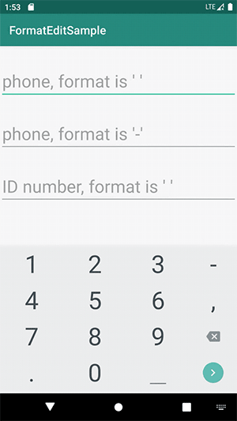
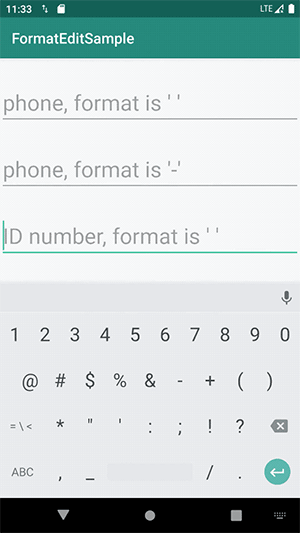

格式化编辑的需求一般是从编辑手机号开始的，UI 给出的效果不是11个连续的数字，而是采用3、4、4的形式，每段中间会空一个字符。在技术实现的时候，一般会自定义一个控件 TelEditText 实现功能，随着项目迭代，格式化编辑的需求可能会增加，比如说身份证号、自定义的优惠券码等，这个时候再给每种情况自定义一个控件就没必要了，通过一个控件实现多种格式化编辑需求是更好的方案。
其实还可以更进一步，格式化编辑的核心逻辑就是给 EditText 添加一个 TextWatcher，通过 TextWatcher 中的文本变化回调来调整 EditText 中的文本，所以自定义 EditText 并不是必须的，对于开发者需要调用的字段和方法，可以通过扩展函数的方式提供。
使用
格式化编辑手机号
布局：
1 | <androidx.appcompat.widget.AppCompatEditText |
代码:
1 | // format is ' ' |

格式化编辑身份证号
布局:
1 | <androidx.appcompat.widget.AppCompatEditText |
资源:
1 | <string name="digits_id_number">0123456789xX</string> |
代码:
1 | etIDNumber.setFormatRules(6, 4, 4, 4) |

设置监听
1 | etPhone.setOnFormatEditListener { isComplete, text -> |
移除格式化的文本
1 | etPhone.textWithFormatRemoved |
实现原理
自定义一个 TextWatcher，定义一个字段 formatChar，值为格式化字符，默认是空格。定义一个字段 formatCharIndexList，值为 EditText 文本中格式化字符所在位置的列表，比如对于格式化编辑手机号， formatCharIndexList 中的值为 [3, 8]，既在 EditText 文本中格式化字符的位置应该是3和8。
1 | var formatChar: Char = ' ' |
EditText 文本发生变化后，如果 EditText 文本的最后一个字符为格式化字符，则删除最后一个字符；然后遍历 EditText 文本中的每一个字符，如果该字符的位置等于格式化字符位置但不是格式化字符，则在该位置插入一个格式化字符，如果该字符的位置不等于格式化字符的位置但又是格式化字符，则删除该格式化字符。
调用 insertFormatChar 或者 deleteChar 后，afterTextChanged 又会立即回调一次，可能会引起多次添加或删除，导致格式化错误。所以每次 afterTextChanged 回调最多进行一次操作，如果后续还需要操作，放在下一次 afterTextChanged 回调中进行。
1 | override fun afterTextChanged(s: Editable?) { |
项目地址
format-edit，觉得用起来很爽的，请不要吝啬你的 Star ！